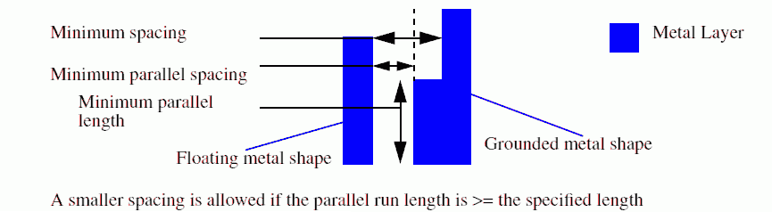

|
 |
 |
||||||
|
|
|
||||||
Some fabs have maximum area rules for floating metal shapes that are not connected to a diffusion or polysilicon-gate. In concept it is similar to process antenna rules because the rule applies to only the current layer and any lower layers (e.g. all the layers that have been fabricated up to the layer of interest), but it is slightly different from the process antenna rules.
The basic form of this rule requires that floating shapes on the routing layers between minRoutingLayer and maxRoutingLayer must have a total area >= maxArea.
Floating metal (typically this rule is defined for metal routing layers) is defined as metal on the current layer that cannot trace a path to diffusion or polysilicon-gate using only same-layer or lower-layer metal connections.
Grounded metal is defined as metal that can connect to a diffusion connection or polysilicon-gate using only same-layer or lower-layer connections. The area rule need not be met if all of the shapes that comprise the area meet a minimum spacing rule (specified by minSpacing) or a parallel-run length spacing rule (specified by minParSpacing, minParallelLength) on the layers specified.
The rule can be applied in the following ways:
| Constraint type: | oaSimpleConstraint |
| Value types: | oaFltValue |
| Database types: | oaDesign, oaTech |
| Object types: | oaAppObject |
The following value types are supported by this constraint:
This value represents the max area converted to dbu squared.
Units: DBU Square
The following parameters are supported by this constraint:
| Name | Value Type | Units | Default | Description | ||||||||
|---|---|---|---|---|---|---|---|---|---|---|---|---|
| floatingMetal oacFloatingMetalConstraintParamType |
oaIntValue | Enum | (Required) |
This parameter stores the inclusive list of routing layers between range of routing layers to which the constraint applies. This parameter can take one of the following values: SingleLayerType, ConnectedType, and AllConnectedType. This parameter is represented by an oaConnectLayerType enumeration:
|
||||||||
| routingLayers oacRoutingLayersConstraintParamType |
oaLayerArrayValue | Layer Number | (Required) |
This parameter stores the inclusive range of oaLayerValue values that correspond to the layers implied by the range of minRoutingLayer to maxRoutinglayer. |
||||||||
| floatingAreaSpacing oacFloatingAreaSpacingConstraintParamType |
oaIntDualIntArrayTblValue | DBU | (Required) |
This parameter stores pairs of minimum spacings and minimum parallel spacings for a given layer. The index of the table corresponds to the index of the layer in the oaLayerArrayConstraint. The oaDualIntValue is represented as ((minSpacing 0)(minParSpacing minParallelLength)...) |

This rule is intended to avoid shorts between floating and non-floating metal wires caused by arcing due to charge build-up during some steps of processing. This construct is defined at a global level, and can optionally specify the min-spacing required to avoid a max floating area violation.
Copyright 2002 - 2010 Cadence Design Systems, Inc.
All rights reserved.